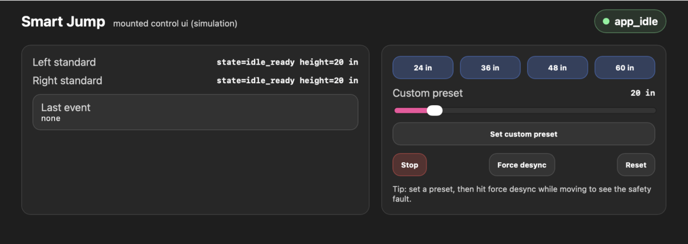
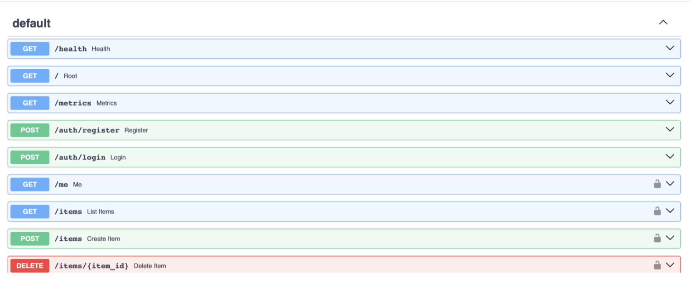

Athens, GA •
(470) 353-2829 •
arisharazakhan@gmail.com
Computer Science student at the University of Georgia with experience in backend systems,
cloud infrastructure, cybersecurity, and automation.
Education
- University of Georgia, School of Computing
- 3.87
- Bachelor of Science in Computer Science
- Summer 2027
Honors and Awards
- President's List
- 2026
- Dean's List
- 2025
Skills
- Python
- JavaScript
- SQL
- Bash
- FastAPI
- REST APIs
- Docker
- Linux
- Terraform
- Active Directory
- SIEM
- React
Leadership and Experience
-
IT Operations Intern, Precision Medicine Group
- June 2026 – Present
- Software Product Engineering, Style My Ride
- January 2024 – Present
- Founder, Director, and Technical Program Lead, Radar STEM Camp
- June 2020 – Present
Projects
Smart Jump Distributed Control System

-
Designed a distributed Bluetooth Low Energy control system coordinating
two independent hardware controllers.
-
Implemented synchronization, heartbeat-based fault detection,
failover logic, and coordinated halt behavior.
-
Built a deterministic simulation environment for telemetry,
controller state machines, and failure injection.
Decision Support System – SLA Monitoring Service
-
Engineered an SLA evaluation engine using Python, FastAPI,
SQLAlchemy, and MySQL.
-
Processed rolling metrics for latency, error rate, CPU usage,
and throughput.
-
Built configurable SLA definitions and database-backed
observability infrastructure.
Cloud Native Backend Platform

-
Built a containerized FastAPI backend with JWT authentication,
persistent storage, and modular service architecture.
-
Designed Terraform infrastructure for a VPC, ECS services,
load balancing, and container deployment.
-
Implemented Prometheus metrics, health monitoring, and CI workflows
for automated builds.